遯卦 天山遯
遯亨，小利貞。初六，遯尾，厲。勿用有攸往。六二，執之用黃牛之革，莫之勝說。九三，係遯，有疾厲，畜臣妾吉。九四，好遯，君子吉，小人否。九五，嘉遯，貞吉。上九，肥遯，无不利。
【卦名】
今本：遯/ 遁 阜陽：椽 帛書：掾 歸藏：𨔵 秦簡：𨔵 上博簡：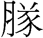 清華簡：敓
遯遁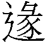
《經典釋文》遯卦：「字又作𨔵，又作遁，同隱退也。匿迹避時，奉身退隱之謂也。鄭云：逃去之名。」
「遯」這個字在一些古書中有時也作遁或𨔵，《說文》無𨔵字，但分別有遯和遁：「遯，逃也，从辵从豚。」「遁，遷也，一曰逃也。从辵盾聲。」關於遯與遁，《說文解字群經正字》列舉許多古籍並這麼說：「今經典二字通用。」事實上，很多《周易》的書，遯卦都作遁。
遁本義為遷移，引申為脫逃的意思。但遁主要借為循，為逡巡之義。段玉裁：「此字古音同循，遷延之意，凡逡遁字如此，今之逡巡也。《儀禮》鄭注用逡遁十有一。一曰逃也，此別一義。以遁同遯，蓋淺人所增。」
比對文字發展及其他的出土資料，卦名作遁應該是假借為遯，並取其逃走之義。不管遯或遁，文字發展頗晚，至小篆才出現。字除了發展和遯一樣晚之外，古籍經典中更是少見。
𨔵與彖
遯卦帛書作掾，漢阜陽簡作椽，輯本《歸藏》與王家台秦簡皆作𨔵，上博簡作，音義皆可與遯字通，陳居淵《周易今古文考證》指出，𨔵、遯、椽、皆從彖得聲，可以互借。
從帛書等新出土資料可推斷，古時卦名可能作「彖」，再從彖增繁而發展出、掾、椽等不同的假借字做為卦名。
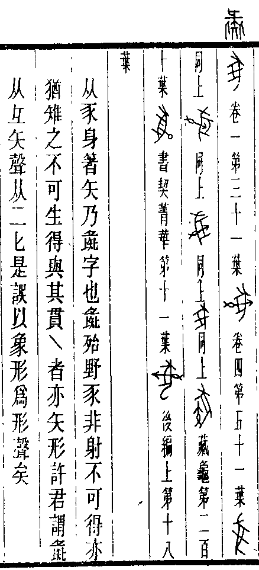
《說文》：「彖，豕走也。」段玉裁：「《玉篇》作『豕走悅』也，恐是許書古本如此。」「豕走悅」即「豕走脫」，豬脫逃的意思。彖字現今作為「斷」解釋，《周易》彖辭意指關於吉凶判斷之辭，而《彖傳》則是關於吉凶判斷的注解。但依《說文》，彖字古義為豬走脫的意思，歸藏及秦簡多一辵字旁可能是要區隔以及強化其「走脫」的字義。
甲骨文字的彖字字源有些爭議，但簡單歸類，可分兩大看法，一說為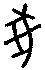，可能與彘同一字源，或者因與彘形近而被解讀為彘。另一說認為與㣇同，作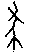。
有許多甲骨文學者將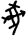解讀為彘字，畫的是豕身上中了箭，因此彘為野豬之稱，例如，圖右為羅振玉和商承祚的《殷虛文字類編》。郭沫若則懷疑，彖與彘同一字源。
細看這一類被許多古文字學家解讀為彘的甲骨文，有些豕身上清楚畫的是中了箭，只是箭或有穿透豕身，或者沒有。但有些豕只是身上多了一條橫線，香港中文大學漢語多功能字庫則將豕上有一橫的字收錄為彖字，與彘字之身上有箭有別，該類字至金文另有將繩子畫成扁圓形者。有學者認為這畫的是被繩子補捉到的豬倒地，因此為墜落之義，引申為惰，怠惰的意思。
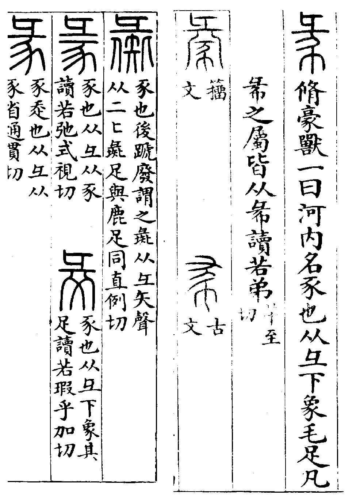
另一看法認為，彖與㣇是同一字。這個看法似乎可從《說文解字》中這幾個形近之字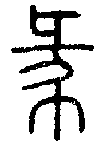（㣇）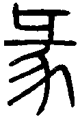（彖）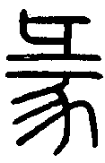（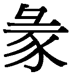）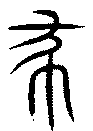（殺）看出端倪，古文字學家在解讀這些古字的字源時似乎有些爭議。
字有很多古文字學家認為是彖字的訛誤，《說文》將「彖」定義為豕走脫，為豕，而「㣇」則是「脩豪獸，一曰河内名豕也」，有學者認為即是豪豬。徐灝《說文解字注箋》：「戴仲達謂，㣇與彖特一字是也。」
于省吾《易經新證》在證明易「彖」當解釋為「解」時，並提出㣇與彖為同的看法，解說甚為詳細：「嚴可均謂㣇彖同字，皆重出，是也。《說文》古文殺...然則豸㣇初本有別，後每無別者，以形音易渾也。」「然自來解者，尚未確定㣇通豸為易彖之本字也。」「章氏知豸之通㣇，而不知㣇即易之彖字。」
再看㣇的甲骨文，有學者解讀為殺，因為與《說文》所引古文殺很像。而郭沫若則以為，這是祟字：「㣇之為祟者猶蛇之為它。㣇有害於田圃，準古人艸居問蛇之例，此則問㣇之有無。」
總合以上資料，遯卦最早卦名最可能是作彖，取的是豕走脫而繫之的意思。遯卦傳統解釋為君子遠遁，這是引申之義。觀遯卦六爻，講的與捕捉小豬有關，且有以繩繫豬的相關情節。同時，經文遯字顯然作名辭解釋文義較順。因此就卦義來說可能一方面意指豬走脫之事，二方面亦以彖借為豚，或者彖亦可做為名辭，即《說文》說的「，豕也」，「㣇，脩豪獸也」。
高亨則以為遯應作豚，為小豬的意思，亦可參考。但這個解釋不如以彖為名辭來解釋，如「遯尾」為豬的尾巴，係遯就是把豬綁好免得脫逃。
【卦義】
逃脫、退隱，明哲保身。
遯，音頓，逃避、退隱的意思。
細究遯卦經文，講的是如何將豬綁起來的事，似乎是在處理逃跑的豬，這也是遯卦的原始意義。然而後世則以君子遁去來解釋卦義，談的是君子如何在小人道長的亂世明哲保身。因此《彖傳》說：「遯亨，遯而亨也。」退避、逃脫則可以得到亨通。《象傳》：「遯，君子以遠小人。」遯卦就是君子遠離小人之卦。
《說卦》以坎為豕，個人竊疑，當以乾為豕。艮為門闕、柵欄，巽為繩。因此遯卦為豕跑到柵欄外，豬走脫之象。互體巽為繩，下艮為手，豬走脫而用手以繩繫之。因此六二說「執之用黃牛之革，莫之勝說」，用黃牛皮革繩將豬綁緊，讓牠無法再走脫。姤初六說「繫于金柅，羸豕孚蹢躅」，講的也是把豬綁緊，同樣是下巽上乾之象。
遯卦上乾健也是君子，下艮止、門闕，君子離去而遠遁之象，互體又有巽繩繫之。君子之遠遯，處境有如豬之欲逃，往往又為諸事所牽拌。下乾上艮的大畜卦則是君子納於門下，為養君子之象。
遯卦也是十二消息卦之一，就卦氣來看，陽氣到四月乾卦達到鼎盛，並開始進入消退的循環。五月姤卦陰爻回來，陰氣用事。六月遯卦陰氣增長，小人道長，君子道消，也是君子開始退避之時。遯卦陰氣再增長，至下一卦則成否。相反的，臨卦則是君子道長，小人開始退散的時候，陽氣再增長，下一卦就是泰卦。
《序卦》：「物不可以久居其所，故受之以遯，遯者退也。」《雜卦傳》：「遯則退也。」卦序上遯卦與大壯是相綜的一對卦，繼恒卦而來。恒卦代表的是穩定的家庭與社會狀態，然而久了不免於僵化，僵化之後君子力圖改變。其一是見小人用事，時不我予，只好明哲保身，離開僵化的社會以呼吸新的空氣，也就是遯卦；一是用力衝撞，打破它的僵固不合理，也就是大壯（大撞）。
對於君子來說遯卦的吉道在於遠離是非，設法隱退，不管什麼事情，都是逃得越遠越快越好。韜光養晦，收斂自己的陽剛之氣，不出鋒頭。盡量遠離小人，不要與人交惡。潔身自愛，莫落人把柄。對於小人來說，雖然不盡然要遠遁，但也應當從正，不走邪道為宜，此經文說的「小利貞」。
解釋遯卦要注意的是，遯卦乍看為吉卦，卦辭說「亨」、「小利貞」，有些爻還是「吉」、「無不利」。但遯之所以吉，對於君子來說是因為能夠退出而遠遁，遠離小人與是非而吉，所以是一種能夠放下名利而明哲保身的吉，而不是因為得到實際的功勞與利益。因此，若問的是功名利祿，問事業或升遷，就近短期的現實來說，斷定為凶亦不為過。
六爻吉凶的判斷上，君子與小人應當有不同的判斷。遯亨，是對君子而言，遯卦亨道在於能遠離內卦的小人（陰爻），所以凶道在內，亨通之道在外，越處卦外，越是與內卦小人無所關聯則越吉。「小貞吉」則指小人或小事而言，以能貞正堅定，順從於陽而為吉。
朱熹：「其占為君子能遯，則身雖退而道亨；小人則利於守正，不可以浸長之故，而遂侵迫於陽也。小，謂陰柔小人也。此卦之占，與否之初二兩爻相類。」
遯亨，小利貞。
《彖》曰：遯亨，遯而亨也。剛當位而應，與時行也。小利貞，浸而長也。遯之時義大矣哉。
《象》曰：天下有山，遯。君子以遠小人，不惡而嚴。
逃離而能夠嘉會而亨通，小人利於堅定於正道。
遯卦是小人道長，君子道消的時候。《易經》是一部「為君子謀」的經典，所以「遯亨」是就君子而言。遯卦時君子之所以能夠亨通，是因為能夠退避而遠遁，因此還可保有些自己的理想。而小人則利於貞靜，不需逃難，但需守正守靜，故曰小利貞。
小利貞有許多種不同的解釋，小可作為大小的小，「利貞」之小。《周易》以陽為大，陰為小，因此比較好的解釋應該是把小當作「陰」來解釋，於人事，可當作小人或小事，小利貞指小人利於貞定。或小事有利而能貞定。
鄭玄以遯為君子逃至他國為仕，並以陳敬仲奔齊國辭去卿位為例說明之：「遯，逃去之名也。艮為門闕，乾有健德，互體有巽，巽為進退。君子出門，行有進退，逃去之象。曰五得位而有應，是用正道得禮見召聘。始仕他國，當尚謙謙。小其和順之道，居小官，幹小事，其進以漸，則遠妒忌之害，昔陳敬仲奔齊辭卿是也。」陳國公子完，字敬仲，因為與他同黨的陳國太子御寇被殺，避政治之難而逃到齊國，成為田齊的始祖。當時齊桓公因為陳完非常知禮而特別欣賞他，並想要請他為國卿，陳完拒絕了，並說：「我只是個客居他鄉而得到厚愛與恩寵的臣子，不敢居於高位。」後來他接受了「工正」一職，主掌百工。因此陳完的「遯」道展現在兩方面：一是遠離陳國到齊國，二是到齊國之後不接受高位，謙虛退讓而只居工正之職。
【字義】
遯亨小利貞：應讀作「遯亨，小利貞」，還是「遯亨小，利貞」？《周易》經文「小」字用法，如小人、小子、小有悔，小吝，小得，小事，小狐，因此不應有「亨小」之讀法。與遯「亨小利貞」近似的卦辭有賁「亨小利有攸往」，旅「小亨」，巽「小亨利有攸往」，既濟「亨小利貞」。由旅卦及巽卦卦辭確定《周易》有「小亨」之用語。由此可推得，賁卦應讀作「亨，小利有攸往」，既濟為「亨，小利貞」，遯為「亨，小利貞」。賁卦及遯卦《彖傳》也都支持這樣的讀法，唯既濟卦依《彖傳》可能為「小亨，利貞」。
天下有山：崔憬：「天喻君子，山比小人。小人浸長，若山之侵天。君子遯避，若天之遠山，故言天下有山遯也。」朱熹：「天體无窮，山高有限，遯之象也。」
遠小人，不惡而嚴：君子當遠離小人，不犯過錯而自有威嚴。遠應讀作院，與「敬鬼神而遠之」的遠同，遠離。遠小人，遠離小人。惡，《說文》：「過也。」不惡，不犯錯。或曰，不與小人交惡，不與小人正面衝突。遯卦之亨道在於能夠遠離小人，遠離是非。侯果：「群小浸盛，剛德殞削，故君子避之。高尚林野，但矜嚴於外，亦不憎惡於內，所謂吾家耄遜於荒也。」孔穎達：「君子當此遯避之時，小人進長，理須遠避，力不能討，故不可為惡，復不可與之褻瀆，故曰不惡而嚴。」
初六，遯尾厲，勿用有攸往。
《象》曰：遯尾之厲，不往何災也。
逃離在最後，危險，那裡都不要去。
初位為尾，所以說是「遯尾」。就空間來說，初是最後面的位置，是留在原地而未逃離者。處遯之時，也是應該逃離的時候，初六以柔居下不當位，又處於尾。艮山之下，又有止而不走之象。
既處遁逃之時，為何說「勿用有攸往」？有兩種可能。一是因為初已經來不及，所以只好留在原地以不變應萬變。二，所當遯去者為君子，於卦則只有陽爻當遯去。卦辭說小利貞，小者宜於貞定而不宜遯去。陰為小，因此初與二兩個陰爻都宜定而不宜往。初六說勿用有攸往，六二說執之用黃牛之革莫之勝脫。
陸績：陰氣已至於二，而初在其後，故曰遯尾也。避難當在前，而在後，故厲。往則與災難會，故勿用有攸往。
虞翻：艮為尾也。初失位，動而得正，故遯尾厲。之應成坎為災，在艮宜靜，若不往於四，則无災矣。
【字義】
不往何災也：解釋勿用有攸往。勿用有攸往即勿用有所往，不宜有所往。依象傳解釋，往則有災。因此不往則何災之有。
厲：原義為磨刀石，引申為砥礪。易傳通常皆解釋為危險。
六二，執之用黃牛之革，莫之勝說。
《象》曰：執用黃牛，固志也。
以黃牛的皮革將它綁緊，牢固而無法鬆脫。
革卦作「鞏用黃牛之革」，原指用皮革將豬綁緊讓它無法逃脫。後儒解釋認為這是比喻君子之意志堅定，有如用黃牛的皮革綁緊一樣的牢靠，意志堅定而無法鬆脫。
【字義】
執之用黃牛之革：執之，綑綁。黃牛，象徵柔中而謙遜。黃為中色，意指中庸，因六二居於下卦的中間。牛為柔順而謙遜之物，六二為陰柔處陰位，柔順而又當位，處於下體，不居高位，因此以牛喻之。黃牛之革，黃牛的皮革，堅韌而不易斷裂，比喻六二和遯退的君子同進退的志氣與決心，此《象傳》所說：「執用黃牛，固志也。」卦辭所說的「小利貞」，因六二為遯卦之成卦主爻。
莫之勝說：勝，音「生」。莫之勝說有三種解釋。一、「說」同「悅」，莫之勝悅為不亦樂乎。二、說為言語的意思，莫之勝說意即一切盡在不言中。三、「說」同「脫」，脫離、鬆脫的意思，莫之勝脫因為「執之用黃牛之革」非常堅固，因此無法解開、鬆脫。三種解釋以第三者文義上最為通順，也是最多注解者所採用。「說」字帛書作「奪」，借為「兌」。帛書兌卦作奪。
九三，係遯，有疾，厲，畜臣妾吉。
《象》曰：係遯之厲，有疾憊也。畜臣妾吉，不可大事也。
心有牽掛的逃離，有心病，危險。畜養臣妾吉。
原義應該是指繫綁的豬有病，因此若畜養豬為不順而厲。但若畜養臣妾則為吉。
傳統解釋則認為這是君子遠遁之志有所牽係，無法擺脫名利的束縛，深深眷戀過往，無法超然物外，因此稱有疾，疾意指心病。雖然是應該隱退逃去的時候，但仍念念不忘富貴名利。
諸如畜養臣妾等小事為吉，但對於一些國家大事，或是公務，則是凶。隱喻只能做些偏邪小事，不足以成大器。此《象傳》所說的：「畜臣妾吉，不可大事也。」
許慎《五經異義》：「《易》曰係遁，有疾厲，畜臣妾吉，知諸侯無去國之義也。」
【字義】
係遯有疾：係，同繫，綁住。係遯有疾，綁住的豬有病，因此後言「厲」。傳統註解，「係遯」乃心有所係的逃退，指九三在小人道長的時候，仍然心係於內之陰。因九三處於內卦，又與六二比應，是有所牽掛而難以逃離者。九三為互體巽中，巽為繩，故曰係遯。王弼：「在內近二，以陽附陰，宜遯而繫，故曰繫遯。遯之為義，宜遠小人，以陽附陰，繫於所在，不能遠害，亦已憊矣，宜其屈辱而危厲也。」
畜臣妾吉 ：納畜男奴和女奴為吉。古代臣、妾原本都是奴隸，男子為臣，女子為妾。後來臣又引申為幫君王做事的臣僚，又有臣服、服從之義。妾原本為女子有罪而為奴者，漂亮的則可侍寢，後來引申將未經明媒正娶而近侍在側的女子稱妾。《說文》：「臣，牽也，事君也。象屈服之形。」《書．費誓》：「臣妾逋逃」講的是臣和妾都逃走了，孔安國注：「役人賤者，男曰臣，女曰妾。」卜辭中也常有臣妾合稱者，《甲骨文合集》629：「夕用甗，小臣三十，小妾三十，于帚。」631：「臣七十，妾...。」有時妾也稱女，630：「貞多妣甗，小臣三十，小女三十，于帚。」帛書作「畜僕妾吉」，僕與臣義同。
係遯之厲，有疾憊也：係遯之所以危厲，乃是因為有疾而困於疲憊。憊，疲憊。《釋文》：「王肅作斃，荀作備。」鄭玄：「憊，困也。」《本義》：「憊，音敗。」
畜臣妾吉，不可大事也：卦辭說「小利貞」，因此遯卦以小事能夠有利而貞定為吉，《象傳》說「畜臣妾吉，不可大事也」，因畜臣妾為小事。遯卦不宜做大事，宜做小事。大事宜於退避，小事宜於有利而貞定，畜臣妾為小事，所以說吉。《周易》的大小，並不是以事態之大小而言，陽為大，陰為小。以此對比來看，則公事為大，私事為小。外事為大，內事為小。納臣妾乃是對內之私事，因此為小事。觀卦馬融注：「國之大事，唯祀與戎。」王肅：「三上係于二而獲遯，故曰係遯。病此係執而獲危懼，故曰有疾憊也。此於六二，畜臣妾之象。足以畜其臣妾，不可施為大事也。」朱熹：「蓋君子之於小人，惟臣妾，則不必其賢而可畜耳。」
九四，好遯，君子吉，小人否。
《象》曰：君子好遯，小人否也。
好的隱退，君子吉，小人閉塞不通。
遯卦為君子離去，九四開始才進入外卦，也是門闕之外，所以到九四才真正逃離。九四為逃離的開始，以「好」來形容。
但君子與小人有不同的判斷。九四乾體，為君子之卦，又處外體，為能遁退者，因此君子為吉。但反之卻無利於小人，小人居此位則當閉塞而無所做為。
王弼認為，君子之所以吉，小人之所以為否，因九四與初相應。君子能捨應而遠遁，小人則不能捨而有所繫戀：「處於外而有應於內，君子好遯，故能舍之，小人繫戀，是以否也。」馬融則是完全相反的解釋，認為君子雖身在外，亦心在王室，小人則會因此而怨：「好遯，君子吉，言身雖外，乃心在王室，此之謂也。小人則不然，身外，心必怨也。」
【字義】
好遯：原義或指好的豬，好的豬君子可得，所以為吉。小人不可得，所以曰否。好或讀作四聲，為愛好之義。愛好豬，君子為吉，小人不得食豬，因此為否。傳統將遯解釋為遁退，好遯意指好的遁退，或者能夠以遁退為樂。
小人否：《釋文》：「否音鄙，惡也。」
九五，嘉遯，貞吉。
《象》曰：嘉遯貞吉，以正志也。
美好的隱退，貞定則吉。
九五雖然是比九四逃得更遠的君子，然而以中正陽剛之德而居九五之尊位，是能逃但卻又為名與職位所累，不能完全逃去的一位。又與六二相應，代表多少仍有些許牽掛。所以與九四同樣，以「嘉」來形容。
【字義】
嘉遯：傳統解釋以嘉為美、善，遯為逃去。嘉甲骨文字義為美味，遯或可作名辭，為豬。九四好遯為好的豬，或者指的是君子愛好食豬。嘉遯則為美味的豬。好是就豬的外觀來說，嘉則是就豬肉的品質來說。
上九，肥遯，无不利。
《象》曰：肥遯，无不利，无所疑也。
自得而寬裕的逃離，無所不利。
達到了隱退的最高境界，已有仙風道骨，天子都無法命令於你，達官貴人也無法和你高攀。心中無所懷疑，而能完全超然物外，對於世俗的榮辱名利，完全能看開。無所不利。
遯卦中逃離的三個陽爻裡，九四與九五都還有初六、六二相應，上九不但與陰爻完全不相應，又居於遯卦的最外面，與任何一爻都沒有任何關聯，是最能夠放下一切，沒有任何遲疑而無所繫絆的逃離者，因此以「肥遯」形容。
原義或指肥的豬，豬養得肥，代表豐盛與財富，因此無所不利。
【字義】
遯亨，遯而亨也。剛當位而應，與時行也。小利貞，浸而長也。遯之時義大矣哉。
肥遯：肥，自得而寬裕的樣子。《淮南九師道訓》作「飛遯」，註曰：「遯而能飛，吉孰大焉。」
【彖傳注】
遯亨，遯而亨也：解釋經文「遯亨」。遯為退的意思。遯而亨，退而能夠亨通。得遯卦，君子當以能退才得而亨。
剛當位而應，與時行也：以主爻解釋卦義，「剛當位」可能指九五，亦可能是九三。九五陽剛當位而得中，與六二相應，能與時而行者。若指的是九五，通常可能又會以中正來稱呼，此處為何只講當位？然而《彖傳》如果單講「應」，比較可能指的是遠應，而不是比應，因此似乎講的不像是九三。細究之，九五可為治卦之主爻，而九三並非成卦之主爻，因此這裡指的應該是九五。遯卦的成卦主爻，應當是六二，這也是後文「小利貞，浸而長也」之所指。
小利貞，浸而長也：小者宜於貞定。以陰陽的消息解釋小利貞。浸，逐漸。浸而長，逐漸增長，指的是陰氣。陰氣稱小，小利貞因為陰氣逐漸增長。遯卦是由姤卦陰氣增長而來。